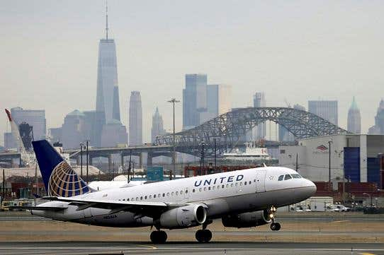

Rockets or Not, These Foreigners Refuse to Postpone Post-pandemic Trips to Israel
Open gallery view
Lori Rosner wasn’t paying particular attention to Israel’s rapidly deteriorating security situation as she checked in at Newark Liberty International Airport on Tuesday afternoon.She had only received permission to enter the country to visit her daughter 27 hours earlier after a long struggle and was totally focused on making her flight to Tel Aviv.
She was standing at the gate, waiting to board, when she received a call from her daughter, Nili Yammer, in the West Bank settlement of Efrat, informing her that due to that evening’s rocket barrage, Ben-Gurion Airport had been shuttered.
Rosner, who flew several times a year before the pandemic but hadn’t been to Israel since March 2020, knew she had to make a decision.
'I basically just was like, ‘I’m going on the plane, I’m gonna see my kids,’' she said.'I didn’t know if it was a good choice or not.My kids said they feel very safe in Efrat and I really trusted that Israel wasn’t going to let us land if they didn’t feel it was safe to land.'
While the rockets launched from the Gaza Strip have severely disrupted air travel and sent Israelis scrambling for shelter across the country, some American Jews like Rosner, who have not seen their relatives in Israel for over a year, have decided to brave the risks, and the logistical headaches, and visit anyway.
Jews worldwide were delighted last month when Israel announced that it would allow vaccinated first-degree relatives into the country.However, many were soon disillusioned at the onerous documentation requirements and the slow and seemingly capricious decision-making.So, when Hamas began firing rockets into Israel earlier this week, some travelers decided they had worked too hard in arranging their trips to let the danger deter them.
'We have both been living and breathing the permit process for nearly two weeks,' only receiving one on Monday morning, Melisa Douek Ben-Horin told Haaretz a few hours before her father arrived on a Wednesday evening flight from London.
'We haven’t seen each other for a year and a half.It’s been a terrible year as my mother and grandmother both died from COVID.My father is finally fully vaccinated and now this happens.He still wants to come and be with us.I’m praying it will be OK.As he said this morning, ‘All we need now is a tsunami!’'
Beit Shemesh resident Gabi Hammer had a similar story, noting that her parents, who were also due to arrive from London on Wednesday, had been working on obtaining a permit since Passover.
'We made one wedding during the [coronavirus lockdown period] and they missed that, and we're making another wedding May 31 and they wouldn’t miss another,' she said.'There was not one second of discussion of canceling.'
Emily Bitton, who is slated to fly next week to see her 91-year-old mother Livia, who recently suffered a stroke, said there was no way she would postpone because of the flare-up.
'As someone who sent my kids to Israeli summer camps during the worst of the intifadas – not sleeping through a single night while they were there – and, pre-pandemic, visited my mother every two months, my attitude is: If Ben-Gurion is open and my flight is flying, I’m coming,' she said.
Former MK Michal Cotler-Wunsh, who in recent months has emerged as a prominent activist for the families of immigrants, said she has 'met only a greater resolve' from relatives of Israelis since the current crisis began.
'What I’m hearing is the resolve to come, whether it be parents or children, just to be together and there for each other,' she said.'There is an understanding that we are not fragile, we are resilient.'
But not everybody has taken such an approach, and many who would still like to come will probably be stymied by the ever-changing situation in Israel.
While national carrier El Al has said it intends to keep flying, Delta, United Airlines, Lufthansa, Austrian Airlines and British Airways have all put flights on hold due to safety concerns.On Thursday, the Civil Aviation Authority announced that any remaining scheduled incoming commercial flights would be diverted to Ramon Airport in Eilat, a four-hour drive from Tel Aviv.
'We were supposed to leave from New York tonight but we have now moved our trip two weeks.I think our flight tonight is canceled either way,' said Ali, an American Jew married to an Israeli.'We did change our flights because of the rockets.'
She said her family in Israel had asked the couple to postpone their trip because of the security situation, and they agreed.
'I have three kids at home, so it’s less fear and more of being responsible to not put myself in danger if it’s not necessary,' she explained.'I’m not frustrated so much as just worried for everyone’s safety on both sides.It’s very disappointing after so much, but I’m very hopeful that a peace can be reached quickly.'
Rosner, who arrived from Newark on Wednesday morning, recalled several people deciding not to board her flight.
'The plane was delayed because some people decided not to fly, and they had to take their luggage off.Some passengers decided definitely not to go,' Rosner recalled, adding that she was happy she decided to stay on board.
'I’m grateful to be able to see my grandchildren,' she said.
Posted On: 2021-05-13T00:00:00

Content Date: 2021-05-13
Download Date: 2021-05-19
Document ID: L0C04CIH8